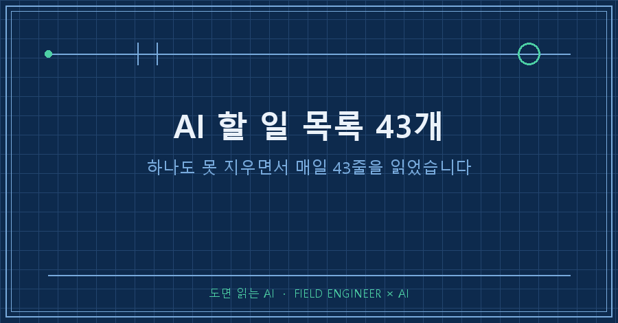
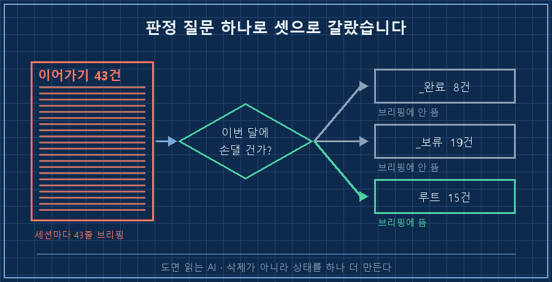
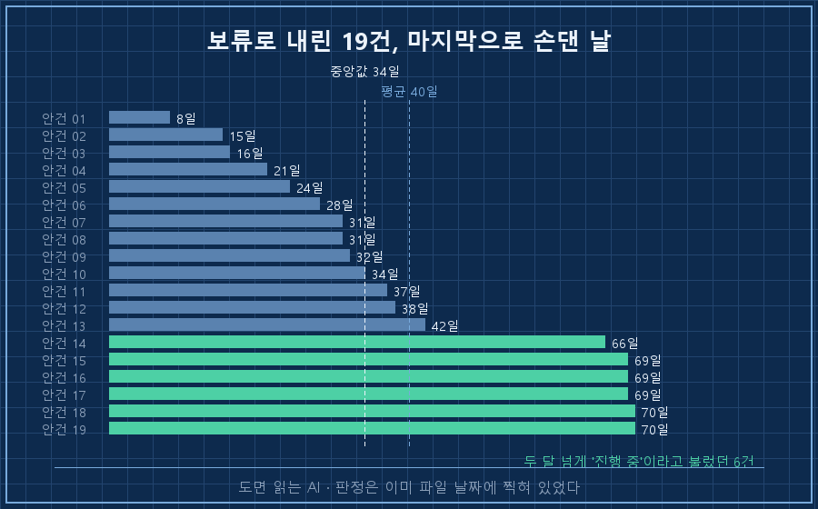
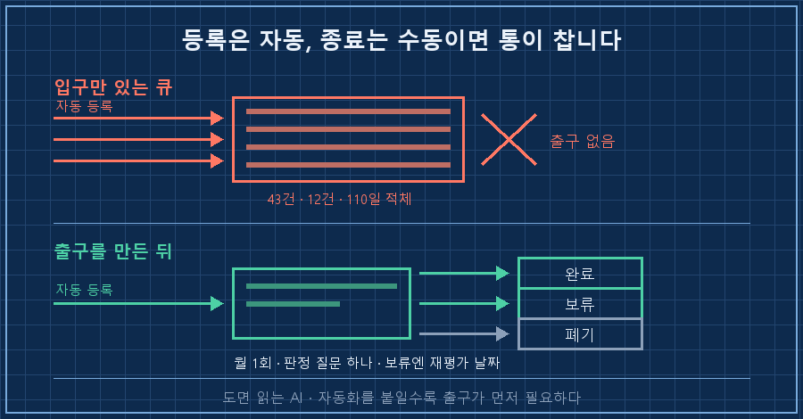

세션을 열 때마다 제 AI가 안 끝난 일 목록을 먼저 읽어줍니다. 어느 날 그게 43줄이었어요.
AI 할 일 목록이 안 줄어드는 걸 저는 한동안 제 게으름 탓으로 알았어요. 정리해보니 아니더라고요.
목록이 안 줄어드는 건 일이 많아서가 아니라, 끝난 일을 닫는 절차가 없고 "지금은 안 함"이라는 상태 자체가 없어서예요. 그래서 저는 하나도 지우지 않고 폴더 세 개로 갈랐습니다. 43개가 15개가 됐어요.
숫자부터 먼저 적어둘게요. 43개 중 8개는 이미 끝난 일이었고, 19개는 지금 안 할 일이었습니다. 진짜로 굴러가던 건 15개였어요.
2026년 8월 얘기고, 거창한 도구는 안 썼습니다. 안건 하나당 파일 하나, 폴더 세 개가 전부예요.
1. 브리핑이 43줄이 되면 아무도 안 읽어요
제 일은 설비가 정상인지 아닌지를 판정하는 쪽입니다. 그 판정만 십오 년 했는데, 정작 제 일감에는 판정 기준이 없었어요.
쓰는 방식은 단순합니다. 세션이 중간에 끊기면 "어디까지 했는지 + 다음에 뭘 할지"를 파일 하나로 남겨두고, 다음에 AI가 그걸 읽고 이어가는 구조예요.
문제는 이 목록이 세션을 열 때마다 통째로 브리핑된다는 점입니다.
[이어가기] 15건:
- (안건명 15줄)지금은 15줄이라 눈에 들어오는데, 43줄일 땐 스크롤로 지나갔어요. 저만 안 읽은 게 아닙니다. AI 입장에서도 43개가 동등한 무게로 들어오니 뭘 먼저 물어야 할지 못 고르더라고요.
결국 목록이 아니라 사람이 먼저 무너졌습니다. 잠은 모자라고 본업은 본업대로 있는데 안 끝낸 일 43개를 매일 확인하는 상태였거든요. 그때 제가 한 말이 "못 하겠다"였어요..
2. 지우기가 왜 안 되냐면요
제일 먼저 든 생각은 당연히 삭제였습니다. 반년째 손도 안 댄 것들, 그냥 지우면 되잖아요.
근데 열어보면 지울 수가 없어요. 그 파일 안에는 그때 조사해둔 것, 막혔던 지점, 다음에 뭘 확인해야 하는지가 들어 있거든요. 지우면 나중에 다시 시작할 때 조사부터 처음부터 합니다.
죽은 안건이 아니라 지금 안 하는 안건인 거예요. 그런데 제 목록에는 그 상태를 담을 칸이 없었습니다. 살아있음 아니면 삭제, 둘뿐이었어요.
상태를 셋으로 늘리고 나서야 갈렸습니다.
| 상태 | 뜻 | 어디에 두나 | 브리핑에 뜨나 |
|---|---|---|---|
| 끝남 | 결과가 다른 기록에 남아 있음 | 완료 폴더 | 안 뜸 |
| 지금 안 함 | 죽진 않았고 이번 달엔 안 건드림 | 보류 폴더 | 안 뜸 |
| 진행 중 | 이번 달에 실제로 손댈 것 | 목록 루트 | 뜸 |
3. 폴더 세 개로 갈랐습니다
구조는 이게 전부입니다. 마크다운 파일을 폴더 사이로 옮기는 것뿐이에요.
_이어가기/
├── (진행 중 15건)
├── _보류/ ← 19건, 죽지 않았지만 지금 안 함
└── _완료/ ← 끝난 것 누적 보관
갈라내는 데 오래 안 걸렸어요. 질문을 바꿨더니 그렇게 됐습니다.
전에는 파일을 열 때마다 "이거 끝났나?"를 물었어요. 그러면 답이 안 나옵니다. 대부분은 끝난 것도 아니고 안 끝난 것도 아니거든요.
대신 이렇게 물었습니다. "이번 달에 내가 여기 손을 대나?" 이건 3초면 답이 나와요.
그렇게 8건은 완료로 내려갔습니다. 사실 이미 끝난 일들이었어요. 결과는 다른 기록에 멀쩡히 남아 있는데 목록만 안 닫혀 있던 것뿐이었습니다.
4. 방치 일수를 세봤더니 답이 이미 나와 있었어요
보류로 내린 19건이 정말 보류가 맞았는지, 파일 최종 수정일로 확인해봤습니다.
평균 방치 40일
중앙값 34일
최장 70일19건 전부 최소 8일, 절반 이상이 한 달 넘게 손을 안 댄 상태였어요. 두 달 넘은 것도 여섯 개였고요.
저는 그걸 "진행 중"이라고 부르고 있었습니다. 판정은 이미 파일 날짜에 찍혀 있었는데 제가 안 본 거예요.

한 가지는 같이 정했습니다. 재평가 날짜예요.
보류함에 날짜가 없으면 그건 그냥 삭제거든요. 그래서 8월 말 이후 한 번에 다시 열어보기로 하고, 그 날짜를 규칙 파일에 적어뒀습니다. 이게 없으면 보류 폴더는 6개월 뒤 두 번째 쓰레기통이 돼요.
5. 같은 병이 두 군데 더 있었습니다
목록만 그런 게 아니었어요. 같은 날 두 군데를 더 열어봤는데 증상이 똑같았습니다.
하나는 AI 에이전트끼리 주고받는 인수인계 큐였어요. 12건이 쌓여 있었고, 등록일은 전부 4월 말에서 6월 초. 짧은 게 69일, 긴 건 106일 묵은 것이었습니다.
열어보니 8건은 이미 의미가 없어진 것이었고, 1건은 다른 안건으로 대체돼 있었어요. 진짜로 살아있는 건 2~3건이었습니다. 나머지는 100일 동안 아무도 안 읽으면서 브리핑에는 꼬박꼬박 올라왔고요.
다른 하나는 결정 대기 목록인데, 4월에 등록된 네 건이 110일 넘게 그대로였습니다.
공통점이 하나예요. 셋 다 등록은 자동인데 종료는 수동입니다. 넣는 건 AI가 알아서 하고, 빼는 건 아무도 안 해요.
그러니 입구만 있고 출구가 없는 통이 됩니다. AI 할 일 목록이 유독 빨리 부는 이유가 이거예요. 자동화를 붙일수록 등록 속도만 올라가거든요.

이건 저도 궁금했어요
Q. 보류함도 결국 또 쌓이기만 하는 거 아닌가요?
날짜를 안 박으면 그렇게 됩니다. 저는 보류로 내릴 때 "언제 다시 볼지" 한 줄을 같이 적어요. 그리고 그 날짜에 한꺼번에 엽니다. 하나씩 다시 판단하려 들면 결국 안 열어요.
Q. 완료 처리를 AI한테 시키면 안 되나요?
후보를 뽑는 것까지는 시켜도 됩니다. 제 8건도 결과가 이미 다른 기록에 남아 있어서 대조로 걸러낼 수 있는 것들이었어요.
다만 닫는 판정은 제가 했습니다. 끝난 것처럼 보이는 일과 진짜 끝난 일은 다르고, 잘못 닫으면 조사가 통째로 사라지니까요.
Q. 목록은 몇 개가 적당한가요?
정답은 모르겠어요. 저는 브리핑에 떴을 때 스크롤 없이 읽히는 줄 수로 잡았습니다. 제 경우엔 15줄쯤에서 다시 읽히더라고요.
---
정리하고 나서 제일 달라진 건 AI 할 일 목록의 길이가 아니라 세션 첫 1분이었어요.
15줄은 읽히거든요. 읽히니까 그중 하나를 고르게 되고, 고르니까 그날 뭐라도 하나는 끝납니다!
혹시 안 끝난 일 목록을 안고 계시면, 지우려 하지 마시고 파일 날짜부터 한 번 세보세요. 어느 게 살아있고 어느 게 아닌지는 아마 거기 이미 적혀 있을 거예요.
아직 안 닫힌 목록이 그대로 남아 있는 곳은 makefield.ai입니다.
태그: #AI할일목록 #밀린일정리 #미완료작업관리 #할일목록정리법 #AI세션브리핑 #AI비서 #개인AI에이전트 #AI로일하기 #AI에게일시키기 #백로그정리 #업무관리방법 #폴더정리 #AI워크스페이스 #현장엔지니어 #도면읽는AI